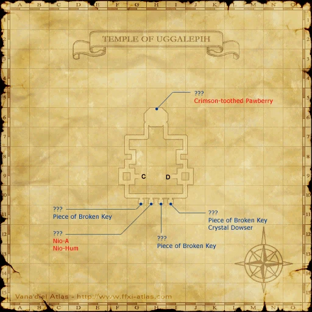

Level 75 reference · Zenith rules
|
Job: Summoner Notorious Monster |
|
|
Zone |
Level |
Drops |
Steal |
Spawns |
Notes |
|
70 |
1 |
A, L, S | |||
|
HP = Detects Low HP; M = Detects Magic; Sc = Follows by Scent; T(S) = True-sight; T(H) = True-hearing JA = Detects job abilities; WS = Detects weaponskills; Z(D) = Asleep in Daytime; Z(N) = Asleep at Nighttime | |||||


Image source
Notes:
- Spawned by trading a Uggalepih Offering to the ??? in the room opened with the Prelate Key; another offering can be traded to respawn the NM every 15 minutes.
- Drops 18,000 gil, divided evenly among party members.
- Killable by: 6 characters level 70 or 3 characters level 75. Can be duo'ed by a 75 Paladin and 75 Red Mage.
- Special Attacks: Summons Carbuncle and does Searing Light multiple times, also summons a random elemental (usually Light Elemental).
Adapted from Eden Wiki: Crimson-toothed Pawberry · Contributors and history · CC BY-SA 4.0. Revision 1796. Layout, links and optional background text adapted for Zenith.